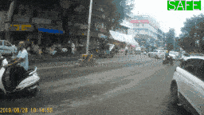
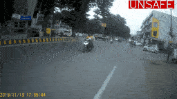

Dataset Description
- 76 videos from diverse locations, time, traffic patterns, collected using an action camera on different roads of Anand, Gujarat.
- Video format: MOV, Resolution: 1920*1080,
Framerate: 30 fps, Duration: 5-8 secs - Annotated each video with a time instance when the road is safe to cross and the instance when the safe duration ends.
- Download link: (github repository link)
Sample videos from Dataset


*We have compressed the videos for display on website as GIFs
Sample rows from labels.csv
| Video No. | SS1 | SE1 | SS2 | SE2 | SS3 | SE3 |
|---|---|---|---|---|---|---|
| 1 | - | - | - | - | - | - |
| 2 | 1 | 5 | - | - | - | - |
| 3 | 1 | 2 | 6 | 7 | - | - |
| 4 | 2 | 4 | - | - | - | - |
| 5 | 0 | 3 | - | - | - | - |
| 6 | 4 | 6 | - | - | - | - |
SS = Safe duration start, SE= Safe duration ends
As seen in the table, we have manually labelled safe duration for each video.
A video can have multiple safe durations.